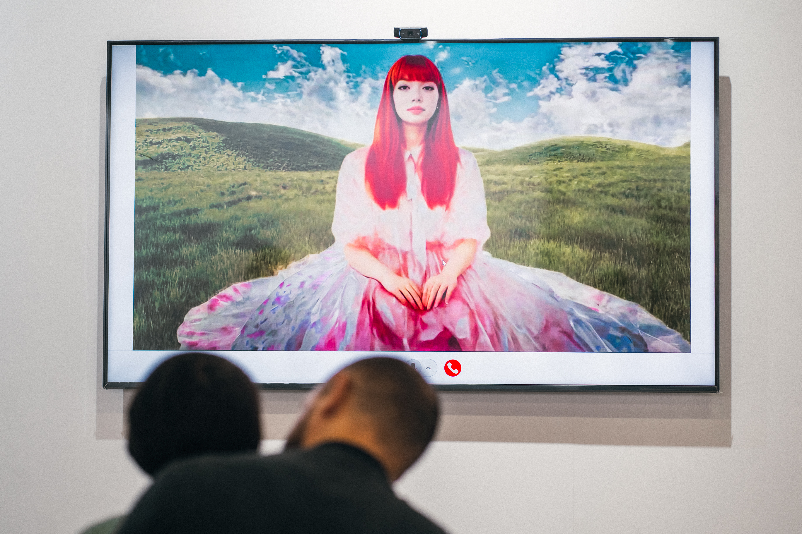

20102020
New media artist
AI, 3D, and interactive installation.
Shavonne Wong.
Practice
Three eras
20202023
3D & Virtual Humans
2023NOW
Interactive AI

II. About
Shavonne Wong
b. 1990, Singapore. Lives and works between Singapore and Bangkok.
Shavonne Wong is a new media artist whose work examines experiences we share but do not always have words for. She started out in fashion and advertising photography, and over time shifted from building hyperreal digital images to creating interactive projects that ask people to recognize something in themselves.
Her recent projects use AI, 3D rendering, and participatory frameworks to sit with the contradictions of how we live today.
Full about →
Selected highlights
- RecognitionForbes 30 Under 30 Asia - Arts · Prestige 40 Under 40
- Shown atArtScience Museum · Venice Biennale · ART SG · Taipei Dangdai
- Brand projectsVogue Singapore · Shu Uemura · Bang & Olufsen
- CommunitiesCo-founder, NFT Asia · Member, BLOOM
Selected Contexts
III. Works
Artworks


IV. Writing
Notes from the studio.